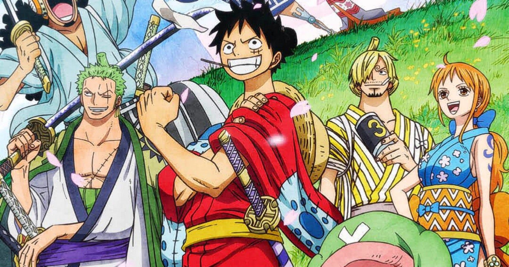

Straw Hat Kru Went To Wano
Kini para kru bajak laut topi jerami menuju negri samurai.
Prolog
One Piece akhirnya memasuki kisah yang paling dinantikan oleh para penggemar fanatik mereka, yaitu Wano. Dengan kisah Whole Cake Island yang sudah usai darin Reverie yang memasuki tahap baru, di cerita ini, anggota gerombolan bajak laut Topi Jerami akan kembali diperkenalkan.
What They Do?
Para personel Topi Jerami ini sudah 2 tahun tak terlihat. Dan, selama itu pulalah, banyak perubahan yang terjadi, jadi banyak anggota Topi Jerami yang memiliki identitas baru Wano. Setelah berpisah dari Monkey D Luffy, Zoro, Franky, Robin dan Usopp berhasil masuk Wano. Karena harus mampu berbaur dengan masyarakat agar tidak menarik Kaidou sebelum Luffy dan yang lainnya masuk negara itu, keempat orang itu akhirnya membuat identitas baru di Wano. Di Wano, Franky menjadi Franosuke si Tukang Kayu, Usopp menjadi penjual minyak katak bernama Usomachi dan Robin menjadi geisha dengan nama O-Robi. Dan, yang paling mengejutkan adalah tingkah polah Zoro.
Zoro—yang kemudian bernama Zorojuro—dituduh membunuh ahli pedang kondang Ryuuma karena dia memiliki Shusui, dan nyaris dibunuh. Tapi, ketika diberi sebilah pisau untuk bunuh diri, Zoro malah menggunakannya untuk membelah area itu.
Fans tentu senang melihat karakter-karakter ini kembali dengan cara yang menarik. Mereka menantikan cerita tentang apa yang sebenarnya dilakukan Zoro dan teman-temannya sejak mereka terakhir kali terlihat di manga One Piece.

Last Words
Wano adalah salah satu kisah yang paling dinantikan para penggemar One Piece sejak didengungkan bakal menggantikan kisah Whole Cake Island begitu berakhir. Tapi, fans harus menantikannya karena One Piece justru masuk kisah Reverie sebelum akhirnya benar-benar masuk Wano.